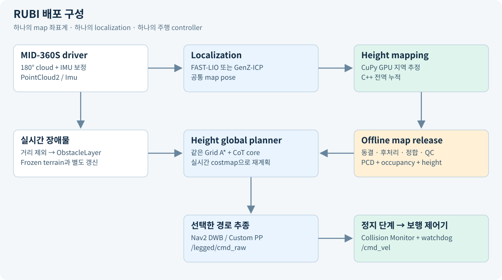
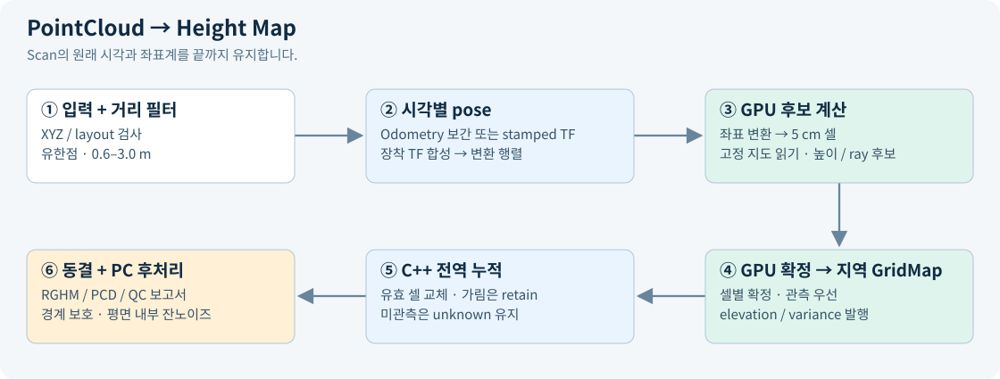
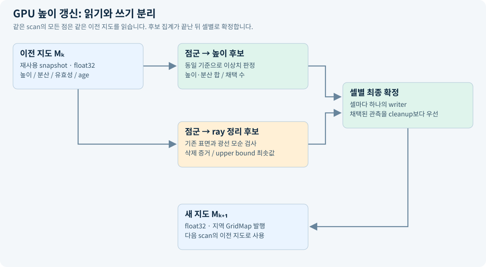

독립 GPU 높이 지도CuPy/CUDA 추정 + 전역 누적
두 가지 주행 모드Nav2 / Custom Pure Pursuit
검증 범위 명시PC 통합시험 완료 · 실물 확인 별도
RUBI height mapping·navigation 배포 기술 보고서
작성 기준: 2026-10-15 · 배포 위치: /home/kim/legged_robot_ws · ROS 2 Humble
1. 목적과 이번 구성의 범위
본 workspace는 point-foot biped인 RUBI의 비전 PC에서 사용할 센서 입력, localization, 2.5D 높이 지도, 전역 경로, 경로 추종을 묶습니다. Jetson Orin NX 16 GB / 25 W가 대상이지만, 이번 실행 검증은 PC에서 수행했습니다.
범위는 공통 map 좌표계의 frozen 전역지도 + 주행 중 장애물 관측 + 선택적 지역 height mapping입니다. 경사로와 단차를 이름으로 분류하는 기능, 발 디딤 위치·보행 동역학·낙상 회피 제어는 구현하지 않습니다. /cmd_vel은 로봇의 기존 보행 제어기에서 받아 실행하는 몸체 이동 명령입니다. 자동차의 차선 지도로 바꾸거나 차량 모델을 적용하는 구성이 아닙니다.
2. 전체 데이터 흐름

GenZ 경로는 대안 localization입니다. 현재 GenZ 설정의 deskew:false를 그대로 유지하며, FAST-LIO의 IMU 기반 deskew와 동등하다고 가정하지 않습니다. GenZ를 선택한 상태에서 원시 점군으로 높이를 취득하려면 정지 취득부터 검증하고 이동 중 변형을 별도로 평가해야 합니다.
3. 패키지와 책임
| 구성 | 입력 → 출력 | 처리 위치 |
|---|
livox_ros_driver2 | SDK packet → upright PointCloud2 / IMU | CPU |
fast_lio_localization | 점군·IMU·PCD → local odom, 전역 pose, deskewed cloud | CPU |
genz_icp | 점군·PCD → local/global odometry | CPU |
rubi_height_mapping | 점군·pose → 지역 GridMap elevation/variance | ROS 처리 CPU + 추정 GPU |
rubi_global_heightmap_wrapper | 지역 GridMap → 지속 전역 높이·저장 파일 | C++ CPU |
rubi_heightmap_postprocess | 저장 snapshot → 원본/후처리 비교·QC | 오프라인 PC CPU |
rubi_heightmap_step_wavefront_planner | 높이·costmap → 전역 Grid A* 경로 | C++ CPU |
legged_navigation | 공통 core의 Nav2 adapter / 기존 Pure Pursuit / 거리 필터 | C++ CPU |
legged_bringup | 실행 구성·frozen 지도·최종 command watchdog | Python/ROS |
fast_lio | 새 PCD 취득용 기존 FAST-LIO mapping 소스 | CPU, 선택적 |
elevation_mapping_cupy 전체 패키지는 필요하지 않습니다. 다만 높이 추정 알고리즘은 기존 upstream에서 파생되었고, CUDA·CuPy 의존성은 남습니다. 직접 작성한 전역 누적 wrapper와 GPU 추정기는 별도 역할입니다.
상위 사용자는 legged_bringup의 짧은 launch와 config만 다룹니다. Height 취득은 ros2 launch legged_bringup mapping.launch.py로 실행하고, 입력·frame·clock·저장·RViz는 config/mapping.yaml에서 관리합니다. 기본은 FAST-LIO 기반 시뮬레이션이며 실물에서는 use_sim_time: false로 변경합니다. upstream 패키지 이름과 source 구조는 비교·업데이트를 위해 유지했습니다. upstream의 오래된 비교 실험 launch는 공개 실행 경로가 아니며, legged_bringup 사용법을 기준으로 합니다.
4. PointCloud2가 높이 지도로 바뀌는 과정

4.1 센서 입력과 전처리
Driver는 Livox packet을 PointCloud2로 묶고 x,y,z,intensity,tag,line,timestamp를 보존합니다. Upside-down 설치에 맞춰 점과 IMU 벡터를 Rx(π)로 회전합니다. 점군 좌표축을 바꾸는 것과 각 점이 측정된 시간을 바꾸는 것은 별개의 처리입니다.
FAST-LIO에는 전체 360° 점군과 IMU가 들어갑니다. preprocess.blind=0.6으로 가까운 반사점을 제외하고, 점별 시간을 사용해 움직임을 보정합니다. 전역 정합은 기존 PCD 지도와 현재 scan을 정합해 map→camera_init을 계산합니다.
Height mapping의 기본 입력은 /cloud_registered_body입니다. 이는 scan 종료 시점의 IMU body frame으로 보정된 점군이며 /localization도 같은 scan 시각을 유지합니다. 물리 sensor origin으로 되돌린 cloud는 아닙니다. 따라서 이 입력의 0.6 m 거리 마스크는 정확히는 IMU-body origin 기준이고, LiDAR와의 수 cm translation이 있습니다. 원시 /livox/lidar를 넣으면 거리 기준은 LiDAR origin이지만 mapper 자체에는 deskew가 없습니다.
Height node는 다음을 수행합니다.
- PointCloud2 field type, stride, row padding, data 크기를 확인합니다.
- 유한한 XYZ만 남깁니다.
- 입력 frame 원점 기준 3D 거리 범위(기본 0.6–3.0 m)를 적용합니다.
- 원래 scan stamp를 유지한 채 pose가 준비될 때까지 유한 길이 큐에서 대기합니다.
- CPU의 NumPy 점 배열을 CuPy 배열로 옮겨 GPU kernel에 전달합니다.
관절 TF는 필요하지 않습니다. 다만 거리 마스크는 전신 self-filter의 대체 보증이 아니며, 0.6 m 밖으로 나온 다리나 손, 가까운 외부 장애물도 구분하지 못합니다. 이 한계 때문에 localization·height·navigation의 입력 사용 목적과 범위를 각각 명시합니다.
4.2 Scan 시각의 pose 결정
지원 모드는 두 가지입니다.
| 모드 | 동작 |
|---|
odom_topic 지정 | nav_msgs/Odometry 캐시에 scan 시각을 끼우는 두 pose를 찾고, translation 선형보간·quaternion SLERP 수행 |
odom_topic 빈 문자열 | scan의 원래 timestamp로 TF 조회 |
직접 odometry 모드는 parent frame이 map_frame과 같아야 합니다. /Odometry는 camera_init→body이므로, map 기준 전역 높이 생성에 기본으로 쓰는 /localization과 같은 의미가 아닙니다. GenZ의 전역 pose는 /genz/localization_odom입니다.
직접 pose 입력에서는 장착 관계만 /tf_static에서 읽습니다. 전역 pose와 또 다른 dynamic TF를 섞지 않습니다. 예를 들어:
T_map_sensor(t) = T_map_odom_child(t) · T_odom_child_sensor
p_map = R_map_sensor(t) · p_sensor + t_map_sensor(t)
Scan 시각을 끼우는 odometry가 없으면 extrapolation하지 않습니다. 기본 wait timeout은 1.5 s, odom 최대 보간 간격은 0.2 s입니다. 시작 이전의 몇 scan이 버려지는 것과, 운용 중 지속해서 pose가 맞지 않는 문제를 구분합니다. Clock 역행이나 fusion 실패는 조용히 최신 TF로 대체하지 않습니다.
이 구조는 localization 오차를 제거하지 않습니다. 입력 pose의 roll/pitch/z 오차는 변환된 바닥에 그대로 나타날 수 있습니다. covariance/twist를 높이 uncertainty로 전파하는 기능도 현재 구현에 포함되지 않습니다.
4.3 지역 grid와 좌표
기본 지역 지도 길이는 8 m, 해상도는 0.05 m입니다. 외부 유효 영역은 160×160 셀이며 kernel용 테두리 padding이 있습니다. 로봇 이동에 맞춰 지역 지도를 정수 셀 단위로 이동시키고 새로 들어온 영역은 unknown으로 둡니다.
내부 배열은 row=Y, column=X입니다. 전역 셀 중심은 다음으로 해석합니다.
x = origin_x + (column + 0.5) × resolution
y = origin_y + (row + 0.5) × resolution
GPU 내부 배치, GridMap의 matrix/circular-buffer convention, C++ wrapper의 row-major 배열 사이를 명시적으로 변환합니다. 과거 축 교환·부호·rolling center 누적 반올림 문제의 수정본과 회귀시험을 유지했습니다.
5 cm 셀은 하나의 높이값만 저장합니다. 수직 모서리에 위·아래 점이 섞일 수 있으며, 같은 XY의 복수 층·천장·교량을 모두 표현하는 3D voxel map이 아닙니다. SDF/ESDF와도 다릅니다.
4.4 GPU 측정 결합
Kernel은 좌표 변환, 유효 영역 판정, 셀 연결, height/variance 결합을 수행합니다. 기본 센서 noise proxy는 다음과 같습니다.
v = sensor_noise_factor × (x_sensor² + y_sensor² + z_sensor²)
sensor_noise_factor = 0.05
기존 셀 높이를 h, variance proxy를 V, 새 점 높이를 z, 새 점 proxy를 v라 하면 결합 후보는:
h_candidate = (h × v + z × V) / (V + v)
V_candidate = (V × v) / (V + v)
0.3.1은 scan 시작 시 이전 지도를 재사용 버퍼에 복사하고, 모든 점이 같은 높이·분산을 읽도록 합니다. 높이 후보를 별도 버퍼에 atomic accumulation하고 후속 kernel에서 셀별 평균을 확정합니다. 모든 점을 하나씩 순차 Kalman update한 결과와 완전히 동일하다고 설명해서는 안 됩니다.
Outlier 판정은 코드에서 abs(h-z) > V × mahalanobis_thresh 형태입니다. 이름만 보고 정규분포의 표준편차 기반 Mahalanobis 거리라고 해석하지 않습니다. 임계 초과 횟수를 기록하고, 해당 셀에 채택된 관측이 없을 때 최종 단계에서 variance proxy를 증가시킵니다. 점을 검사하는 중에는 판정 기준인 V를 바꾸지 않습니다. 이 값은 센서·pose 전체 오차를 교정한 통계적 posterior confidence가 아닙니다.

높이 관측 후보와 ray 정리 후보는 별도 버퍼에 기록합니다. 두 계산이 같은 GPU kernel에서 실행되어도 읽는 지도는 고정되어 있고, 쓰는 버퍼도 구분되므로 서로의 판단 기준을 덮어쓰지 않습니다. 모든 후보 계산이 끝난 뒤 동일 CUDA stream의 다음 kernel에서 셀마다 하나의 작업이 최종 상태를 씁니다.
- 유효한 높이 관측이 채택되면 평균 높이·분산으로 갱신하고 age=0, upper bound=새 높이로 확정합니다. 같은 scan의 ray 삭제 후보보다 우선합니다.
- 채택된 관측이 없으면 outlier 횟수와 ray 모순 증거를 반영합니다. 여러 ray가 제안한 upper bound는 최솟값을 취합니다.
- 미관측 셀에 ray upper bound만 생겨도 유효한 지면으로 바꾸지 않습니다. 가려져서 새 증거가 없는 셀은 유지합니다.
상태·점별 추정값은 float32를 유지하고, 후보 합산은 float64로 수행해 덧셈 순서에 따른 반올림 영향을 줄였습니다. 모든 GPU·모든 입력에서 비트 단위 동일성을 보장한다는 뜻은 아닙니다. 버퍼는 재사용하며 기본 162×162 내부 grid에서 추가 상주 메모리는 약 2.0 MiB입니다. 센서 전처리·pose 계약·기존 ray 경로와 높이 추정식은 유지했고, DDA traversal이나 upstream 전체 패키지는 도입하지 않았습니다.
이는 localization 오차를 교정하는 기능이 아닙니다. 이전 GT/LIO 주행 비교와 달리 이번 반복성 시험은 저장 XYZ와 합성 고정 pose만 사용해 추정기 내부의 재현성을 검사했습니다. 검증 기록의 2026-10-15 snapshot fusion 절을 참조합니다.
내부적으로 elevation, variance, validity, traversability, age, upper bound 관련 일곱 층을 유지합니다. 시간 경과에 따른 variance 증가, ray가 기존 표면을 통과하는 경우의 visibility cleanup, normal 계산이 있습니다. 내부 traversability 점수는 기존 작은 convolution 모델을 CuPy kernel로 옮긴 것이며, 별도 PyTorch/Chainer runtime이나 영상 입력을 요구하지 않습니다. 이 점수는 내부 cleanup에 사용하고, 검증된 보행 안전도 layer로 외부에 제공하지 않습니다.
Drift compensation과 edge sharpening은 기본 비활성입니다. 넓은 바닥 휨을 강제로 평탄화하여 localization 오차를 숨기는 동작은 하지 않습니다. 외부에는 raw elevation/variance GridMap을 발행합니다.
4.5 전역 누적 wrapper
기본 전역 범위는 50×50 m, 해상도 5 cm, 원점 (-25,-25)입니다. 사이트가 더 크거나 원점이 다르면 global.yaml에서 바꿉니다.
Wrapper의 동작은 이미 추정된 지역 높이의 지속 저장입니다. 원시 pointcloud를 다시 CPU로 융합하는 구현이 아닙니다.
| 입력 상황 | invalid_cell_policy=retain의 동작 |
|---|
| 새 유효 지역 셀 | 해당 전역 셀을 새 추정 높이·variance로 교체 |
| NaN / 높은 variance / 가림 | 이전에 받아들인 전역 셀을 유지 |
| 한 번도 관측되지 않은 셀 | unknown 유지 |
| 지역 window 밖 | 기존 전역 셀 유지 |
| 같은 snapshot stamp 재발행 | 중복 갱신하지 않음 |
| frame/resolution/격자 경계 불일치 | 거부 |
| 뒤로 가는 timestamp | 거부; 새 세션은 명시적으로 초기화 |
따라서 occlusion 때문에 지역 지도가 지워져도 전역이 함께 비지 않습니다. 반대로 사라진 장애물을 정적 높이 지도에서 자동으로 지운다는 보장은 없습니다. 실시간 장애물은 별도의 costmap이 다룹니다.
셀에 저장하는 시간은 estimate_snapshot_ns, 즉 받아들인 지역 추정 snapshot의 시각입니다. 셀별 마지막 원시 ray 관측시각을 정밀하게 추적하는 값은 아닙니다. 이 의미를 후처리와 배포에서도 유지합니다.
4.6 동결·저장·불러오기
save_map 서비스는 현재 전역 상태의 일관된 snapshot을 파일로 저장합니다. 온라인 mapping 전체를 영구 정지시키는 명령은 아닙니다. 저장된 파일이 이후 업데이트의 영향을 받지 않는다는 의미로 frozen snapshot을 사용합니다.
map.rghm: frame, resolution, origin, dimensions, 높이, variance, usability, snapshot 시각을 보존합니다.surface.pcd: 유효한 셀 중심의 XYZ를 출력합니다. 미관측 mask 전체와 모든 provenance를 대체하는 형식은 아닙니다.- 새
frozen_map 서버는 CuPy 없이 .rghm을 읽고 /legged/height와 /legged/height_info를 발행합니다.
- 반복 발행해도 acquisition stamp는 원래대로 둡니다. Planner의
static_heightmap=true는 frozen layer의 age/skew 검사만 제외합니다. 실시간 장애물·odom·command의 freshness 검사는 유지합니다.
5. 오프라인 후처리와 모서리 처리
후처리는 Jetson에서 상시 실행할 필요가 없습니다. 원본을 덮어쓰지 않고 PC에서 후보를 생성한 뒤 QC합니다.
현재 rubi_heightmap_postprocess는 두 후보를 비교합니다.
| 방법 | 처리 |
|---|
| Baseline | 반경 6 cm의 유효 이웃 평균, unknown mask 복원 |
| Conservative candidate | 경계·unknown 인접부를 보호하고 평면 내부만 제한적으로 보정 |
Candidate는 3×3 이웃 height span이 25 mm를 넘는 경계를 찾고 한 셀 추가 보호합니다. 연결된 내부 영역에 robust plane을 맞춰 residual P95 ≤4 mm, 변경 최대 10 mm 등의 조건을 통과하면 적용합니다. 큰 영역이 비평면이면 같은 영역 내부 7×7 local plane을 사용하며 RMS ≤3 mm, 변경 최대 10 mm 조건을 적용합니다.
이 알고리즘에서 plane은 잔노이즈 제거를 위한 근사 모델입니다. “경사로” 또는 “단차”라는 terrain class를 생성하지 않습니다. 기울어진 plane도 조건을 만족하면 처리할 수 있습니다. 큰 비선형 localization 변형을 해결하거나, 실제 모서리를 GT world에 맞춰 잘라내지 않습니다.
후처리 결과의 variance는 원본 provenance를 유지하며 새 통계적 uncertainty로 재계산한 값이 아닙니다. Unknown 영역을 채우지 않고 XY와 격자 해상도를 유지합니다. 5 cm 셀 안의 실제 경계 위치를 추가 관측 없이 복원할 수 없으므로, planner는 경계 주변 이웃과 noise floor를 고려합니다.
6. 세 지도 정합과 배포
PCD localization map, 2D occupancy map, height map을 하나의 site version으로 관리합니다. 좌표계 이름이 모두 map이라는 사실만으로 공간적으로 정합된 것은 아닙니다.
권장 흐름은 이미 정합한 PCD/occupancy의 map frame을 기준으로 localization하고, 같은 map pose로 height를 새로 취득하는 것입니다. 이 경우 별도 height ICP를 기본 단계로 추가할 필요는 없지만 landmark와 높이 datum QC는 여전히 필요합니다.
다른 frame에서 만든 height는 구조물·대응점으로 측정한 T_map_from_height를 적용해야 합니다. tools/align_height.py는 주어진 rigid transform을 적용하고 관측 셀 중심을 새 격자에 넣습니다. 자동 registration solver가 아닙니다. 회전·기울기에 따른 여러 점의 셀 충돌에서 높이 span이 25 mm를 넘으면 unknown으로 제외하며, 미관측 영역을 메우지 않습니다. Registration uncertainty는 별도 QC 기록 대상입니다.
tools/package_site.py는 검토된 QC record와 지도들을 새 폴더로 복사하고 SHA-256을 기록합니다. Runtime은 checksum과 frame·resolution을 확인하고 섞인 버전이나 미확인 정합 기록을 거부합니다. maps/demo의 평면 지도는 이 과정과 launch를 시험하기 위한 합성 데이터이며 실제 localization 성능을 보여주지 않습니다.
7. Height 기반 전역 planning
두 주행 모드는 같은 StepGridAStarPlanner core를 사용합니다. 기존 비교용 node를 Pure Pursuit 쪽에 연결하고, Nav2에는 같은 core를 호출하는 HeightPlanner plugin을 추가했습니다.
공통 입력은 2D costmap과 frozen height입니다. 비용은 거리, inflation, height를 함께 사용합니다. 현재 배포 profile은 CoT 기반 equivalent-distance table과 height weight 1.0을 활성화합니다. 표는 RUBI 기존 실험값을 가져온 것이며 다른 기체의 에너지 소비를 보장하는 물리 상수는 아닙니다.
주요 기본값은 5 cm height resolution, 1 cm noise floor, 최대 허용 높이 변화 10 cm, 반경 10 cm 이웃 evidence, quantile 기반 local relief, 위험 높이 경계에서 20 cm 여유입니다. 단순히 바로 인접한 두 셀의 높이차만 보는 구조가 아닙니다. Unknown 또는 충분하지 않은 height evidence는 통과 가능으로 만들지 않습니다.
Static occupancy map에서 이미 occupied인 낮은 구조물은 height layer가 있다고 자동으로 통과 허용되지 않습니다. 사이트 지도 제작 시 “통과 가능한 terrain”과 “몸체 충돌 장애물”을 2D map의 생성 기준에 맞춰 처리해야 합니다. 이는 ramp/step semantic classification을 새로 추가한다는 뜻이 아닙니다.
8. Pure Pursuit의 장애물 회피 연결
Pure Pursuit 자체는 주어진 경로를 따라가는 controller입니다. 장애물 정보를 받아 새 경로를 만드는 알고리즘은 아닙니다.
| 항목 | Nav2 모드 | Pure Pursuit 모드 |
|---|
| 전역 route | 공통 Height Grid A* plugin | 공통 Height Grid A* standalone node |
| 실시간 장애물 | global/local ObstacleLayer | global ObstacleLayer |
| 우회 | 주기적 전역 재계획 + DWB 지역 회피 | 기존 route 검사 → 무효 시 정지·전역 재계획 |
| 경로 추종 | Nav2 controller_server / DWB | 기존 custom Pure Pursuit |
| 근접 장애물 | 공통 Collision Monitor | 공통 Collision Monitor |
| 데이터 중단 | 공통 최종 watchdog | 공통 최종 watchdog |
/livox/lidar → range filter → /legged/obstacles
├→ ObstacleLayer → 새 전역 route
└→ Collision Monitor
selected controller → /legged/cmd_raw → Collision Monitor
→ /legged/cmd_safe → watchdog → /cmd_vel
기존 비교 profile의 replanning.enabled:false를 새 배포 profile에서는 true로 바꿨습니다. 장애물이 기존 경로를 막으면 빈 tracking path로 추종을 중지하고 우회 경로를 계산합니다. 새 경로가 없으면 정지 상태를 유지합니다. 장애물 검출을 정지만으로 해결했다고 설명하지 않으며, 반대로 재계획을 켰다는 이유만으로 갑작스러운 근접 충돌 대응이 보장된다고도 설명하지 않습니다.
최종 watchdog은 command와 cloud·odom·costmap의 수신 및 timestamp를 검사합니다. 이는 사용한 Humble Collision Monitor의 version 차이에만 freshness 동작을 맡기지 않기 위한 구성입니다. 두 controller를 동시에 실행하지 않습니다. Nav2 BT에는 자동 후진·회전 recovery를 넣지 않아 height 검사를 거치지 않은 임의 recovery 이동을 시작하지 않습니다.
Costmap height gate는 이 profile에서 map frame의 z=0 지면을 기준으로 시작하며, Collision Monitor gate는 base_link 기준입니다. 서로 같은 숫자를 무조건 복사하지 않습니다. 0.6 m 거리 제외는 가까운 외부 장애물도 제외하므로, 정지 zone과 실제 보행 속도·정지 거리를 함께 실측해야 합니다. 현재 초기 속도 상한은 0.3 m/s입니다.
9. 자원과 Jetson 운영
GPU로 옮긴 것은 높이 kernel입니다. ROS 수신·TF/odometry·pointcloud layout 처리, C++ 누적, FAST-LIO/GenZ 정합, Nav2와 planner는 CPU 작업이 남습니다. GPU 사용률을 높이면 모든 CPU 부하가 없어지는 구조가 아닙니다.
실제 주행 세션에서는 frozen map + 선택한 localization 하나 + 선택한 controller 하나를 기본으로 운영합니다. 지역 height mapping이 필요한 실험에서만 GPU mapper를 추가합니다. offline 후처리, RViz, map 취득용 FAST-LIO mapping을 항상 함께 띄울 필요는 없습니다.
Orin 검증에는 tegrastats로 RAM·GPU·CPU·thermal throttling과 scan queue 대기, drop 수, pose 지연, navigation 지연을 함께 기록합니다. 이 PC의 통과 결과로 25 W 조건의 처리율이나 FastDEM 대비 우열을 확정하지 않습니다. JetPack/CUDA를 확인한 뒤 실제 센서 replay와 보행 로그로 acceptance 범위를 정합니다.
10. 검증과 납품 판단
검증 결과는 VALIDATION.md에 정리했습니다. 실제 ROS launch에서 frozen stamp 보존, 두 모드의 경로 생성, 장애물 우회, nonzero command, 근접 정지와 stale sensor 정지를 확인했습니다. GPU 추정·직접 odometry·장착 변환 시험도 수행했습니다.
추가 실물 확인 항목은 MID-360S clock/축/장착 translation, Jetson JetPack와 자원 여유, 실제 PCD/occupancy/height 정합 오차, 보행 중 self-return 범위, 관측 사각지대와 정지 거리입니다. Localization 알고리즘 자체의 연구 개선은 이 배포 작업 범위에 포함하지 않았습니다.
기존 FAST-LIO 폴더의 package.xml license 표기와 LICENSE 내용에는 차이가 있으므로 전체 workspace를 하나의 MIT 패키지라고 표기하지 않습니다. 원본 license를 보존하고 구성요소별 출처를 THIRD_PARTY.md에 기록했습니다.
11. 읽을 코드
외부 근거: Livox 공식 driver, Humble ObstacleLayer, Humble Collision Monitor, CuPy 설치.
추가: GPU를 유지한 경량화 (2026-10-15)
현재 높이 융합은 이미 CUDA/CuPy에서 실행합니다. NumPy→CuPy로 바꾸는 작업을 새로 시작하는 단계가 아닙니다. CPU는 ROS 수신·XYZ 추출·거리 마스크·pose 보간·메시지 발행을 맡고, 전역 누적은 C++ CPU wrapper가 맡습니다.
2026-10-15에는 중복 GPU finite 검사, layer별 host 복사, Python float 목록 생성을 줄였습니다. 5 cm 해상도와 추정 알고리즘은 그대로이며, 수치 결과와 ROS 직렬화 호환성을 확인했습니다. 자세한 조건과 결과는 검증 기록을 따릅니다. 이 변경만으로 이전 화면 지연의 원인을 확정하거나 Jetson 성능을 보장하지 않습니다.
Jetson 운영의 우선순위는 QC한 frozen 전역지도를 로드하여 planner에 제공하고, 필요한 경우에만 작은 지역 지도를 GPU에서 갱신하는 것입니다. 취득 중 전역 누적·시각화가 필요할 때와 배포 후 frozen 지도를 사용하는 때의 계산량을 구분합니다. RViz는 개발 PC에 두고, 발행 주기는 제어·planner가 요구하는 값에 맞춥니다. Grid 크기나 해상도를 줄이는 설정은 품질·범위의 변경이므로 이번 최적화에는 적용하지 않았습니다.
추가: 높이 융합과 ray 선택의 역할 분리
ray_mode=voxel 경로는 다음 순서입니다.
전체 XYZ → 기존 GPU 좌표변환·inlier 계수 + 3D voxel 대표 index 선택
↓
전체 점의 높이 융합 → 선택된 원래 점만 visibility cleanup
↓
기존 셀별 집계·내부 traversability·normal → GridMap → 전역 wrapper
ray 선택은 기존 첫 번째 kernel에 합쳐 좌표를 다시 계산하거나 CPU로 index를 가져오지 않습니다. 별도의 GPU 정렬·가변 크기 점군 압축도 하지 않습니다. 각 voxel에서 가장 앞선 원래 입력 index를 선택하고 메모리 버퍼를 재사용합니다. hash 탐색 한계 또는 좌표 범위 초과 시 해당 원래 ray를 그대로 검사합니다.
FastDEM의 ray 입력 축소 구조를 참고했으나 자체 CUDA 구현이며, FastDEM 높이 추정 방식을 복사한 것은 아닙니다. 선택 ray는 기존과 같은 cleanup 검사를 통과해야 합니다. 각 ray의 증거 강도를 줄어든 점 수만큼 임의로 증폭하지 않습니다. 그 결과 제거가 늦어지는 경우가 있으며 실제 저장 입력에서의 속도 이득도 확인되지 않아 기본값은 all입니다. 검증 범위와 한계, 실행 방법을 함께 확인합니다.
설치 안내
1. 지원 기준과 미확인 환경
| 항목 | 기준 |
|---|
| OS / ROS | Ubuntu 22.04 / ROS 2 Humble |
| Python / C++ | 시스템 Python 3.10 / C++17, GenZ는 C++20 |
| GPU 지도 생성 | CUDA에 맞는 CuPy 13.6.0, NumPy 1.x |
| Frozen 지도 주행 | CuPy 불필요; CPU mapper로 대체한다는 뜻은 아님 |
| 대상 장치 | Jetson Orin NX 16 GB / 25 W, JetPack 버전 미확인 |
| 검증한 장치 | x86_64 PC + RTX 5090, CuPy 13.6.0 |
JetPack 6.2.1은 Ubuntu 22.04 기반 Jetson Linux와 CUDA 12.6을 포함하는 공식 구성입니다. 이를 환경 선택의 참고로 사용하되, 현재 Jetson 버전을 확인하지 않고 OS나 CUDA를 덮어쓰지 않습니다. NVIDIA 릴리스 노트
cat /etc/nv_tegra_release
cat /etc/os-release
nvcc --version
python3 --version
dpkg-query -W nvidia-jetpack
JetPack 5 / Ubuntu 20.04라면 이 Humble 배포 조합과 동일하지 않습니다. 먼저 OS·ROS 조합을 정해야 합니다.
2. ROS 의존성
ROS 2 Humble 설치 후, 새 터미널에서 실행합니다.
source /opt/ros/humble/setup.bash
sudo apt update
sudo apt install python3-colcon-common-extensions python3-rosdep \
python3-pip python3-numpy python3-scipy python3-matplotlib python3-yaml \
python3-open3d libeigen3-dev libpcl-dev libyaml-cpp-dev \
ros-humble-navigation2 ros-humble-nav2-bringup ros-humble-nav2-collision-monitor \
ros-humble-grid-map-msgs ros-humble-pcl-ros ros-humble-pcl-conversions \
ros-humble-tf-transformations ros-humble-sensor-msgs-py
cd ~/legged_robot_ws
rosdep install --from-paths src --ignore-src -r -y --rosdistro humble
rosdep가 처음이라면 시스템 설치 절차에 따라 한 번 초기화합니다. GenZ CMake는 사용 가능한 Eigen/TBB/Sophus 등의 의존성을 찾거나 upstream에서 내려받으므로 최초 빌드에는 네트워크가 필요할 수 있습니다. SDK 소스는 third_party/Livox-SDK2에 포함되어 있습니다.
FAST-LIO의 Python 전역 정합은 Open3D를 사용합니다. Height mapper에서 Open3D·PyTorch를 제거했다는 것과 전체 localization까지 의존성이 없다는 것은 다릅니다. 새 배포본의 FAST-LIO 전역 정합에서 ros2_numpy는 제거하고 ROS의 sensor_msgs_py를 사용합니다.
3. GPU 지도 생성용 CuPy
CUDA 12.x인 경우의 고정 버전 예시입니다. 시스템 CUDA 버전을 먼저 확인합니다.
python3 -m pip install --user 'numpy>=1.22,<2' 'cupy-cuda12x==13.6.0'
python3 -c "import cupy as cp; print(cp.__version__); print(cp.arange(8).sum().get())"
CUDA 13.x 환경에서는 해당 CUDA와 CuPy 버전에 맞는 패키지를 선택해야 합니다. cupy, cupy-cuda12x, cupy-cuda13x를 동시에 설치하지 않습니다. 아키텍처·Python·CUDA 조합에 맞는 wheel이 없으면 source build가 필요합니다. 설치 방법은 CuPy 공식 안내를 기준으로 합니다. 최신 CuPy 14와 NumPy 2로 자동 업그레이드하는 구성은 이 배포본의 검증 범위가 아닙니다.
Jetson에는 JetPack CUDA를 사용합니다. PC용 드라이버 설치 명령이나 PC의 .python_deps 폴더를 복사하지 않습니다. Frozen 지도 주행만 하는 장치에는 이 단계가 필요하지 않습니다.
4. 소스 빌드
cd ~/legged_robot_ws
source /opt/ros/humble/setup.bash
cmake -S third_party/Livox-SDK2 -B build/sdk \
-DCMAKE_BUILD_TYPE=Release -DCMAKE_INSTALL_PREFIX="$PWD/.sdk"
cmake --build build/sdk -j2
cmake --install build/sdk
colcon build --symlink-install --executor sequential \
--cmake-args -DCMAKE_BUILD_TYPE=Release
source install/setup.bash
ros2 run rubi_height_mapping check_environment
SDK는 이 workspace의 .sdk에 설치합니다. 기존 /usr/local SDK를 덮어쓰지 않습니다. Livox driver는 이 위치를 명시적으로 링크합니다. 다른 PC로 배포할 때 src, third_party, docs, tools, 지도 세트를 복사하고 그 PC에서 다시 빌드합니다. PC의 build, install, .sdk 바이너리를 Jetson으로 복사하지 않습니다.
--executor sequential과 -j2는 빌드 중 메모리 사용을 줄이기 위한 선택이며, 런타임의 BLAS·OMP 스레드를 제한하는 설정이 아닙니다. 새 launch는 OPENBLAS_NUM_THREADS, OMP_NUM_THREADS, MKL_NUM_THREADS를 강제로 설정하지 않습니다.
5. MID-360S 설정
src/legged_bringup/config/sensor.json:
- 모델 키는
Mid360s, device type은 8입니다.
- 기본 예시 sensor IP는
192.168.1.12, host IP는 192.168.1.5입니다. 실제 라벨·네트워크 설정에 맞춥니다.
roll: 180, pitch: 0, yaw: 0은 현재 upside-down 장착 조건입니다.- driver translation은
[0,0,0]으로 유지합니다. 물리 장착 위치는 frames.yaml과 FAST-LIO extrinsic으로 표현합니다.
- 이미 회전한
/livox/lidar·/livox/imu에 별도 axis-flip 노드를 다시 연결하지 않습니다.
출력은 /livox/lidar = sensor_msgs/PointCloud2, /livox/imu = sensor_msgs/Imu입니다. 파일 이름에 msg가 있다는 이유로 형식을 추정하지 않습니다. 고정한 공식 드라이버 문서
6. 최초 확인
ros2 pkg prefix legged_bringup
ros2 pkg prefix fast_lio_localization
ros2 pkg prefix livox_ros_driver2
ros2 topic info /livox/lidar
ros2 topic echo /livox/imu --once
패키지 prefix가 legged_robot_ws/install/...인지 확인합니다. /livox/lidar의 timestamp 필드는 FLOAT64 절대 nanosecond이어야 합니다. Header와 IMU가 같은 clock domain인지, 정지 시 가속도 방향이 기대한 축인지, 전방 landmark가 기대한 위치인지 확인합니다. 물리 설치와 새 센서 시리얼은 이 PC 시험에서 확인하지 않았습니다.
7. 흔한 오류
| 증상 | 확인 |
|---|
| package를 못 찾음 | 새 터미널에서 새 workspace의 install/setup.bash source |
| SDK library를 못 찾음 | .sdk 설치 완료 여부, workspace 이동 후 재빌드 |
Livox cloud requires field timestamp | XYZ-only cloud나 simulator cloud를 물리 MID-360 parser에 넣지 않았는지 확인 |
| timestamp unit 오류 | driver 절대 ns와 CustomMsg 상대 ns를 혼동하지 않았는지 확인 |
| map frame 불일치 | map 이름만 바꾸지 말고 실제 변환·정합 수행 |
| 첫 scan에 odometry bracket 없음 | 시작 시 캐시 이전 scan은 버려질 수 있음. 지속 발생이면 stamp·주기·clock 확인 |
| 지도는 보이지만 로봇이 정지 | /legged/obstacles, /Odometry 또는 GenZ odom, costmap, Collision Monitor 활성 상태 확인 |
| Nav2가 낮은 terrain을 모두 장애물로 봄 | 2D static map과 obstacle height gate를 사이트의 지면 높이에 맞춰 확인 |
지도와 주행 운영
A. 사이트 준비
기준은 기존에 정합한 localization PCD + occupancy YAML/PGM의 map frame입니다. 바닥의 높이 기준(z datum), gravity 방향, 로봇 장착 translation을 먼저 확인합니다. 새 height map은 이 PCD에 localization한 pose로 취득하면 됩니다.
PCD/occupancy만 있는 첫 mapping 세션에서는 site.yaml의 height 항목은 아직 없어도 됩니다. 아래 형태로 두 지도와 이미지의 SHA-256을 기록합니다. alignment.verified는 실제 확인 결과를 기입하며, false 상태로 실제 navigation을 시작하지 않습니다.
format: 1
id: site-a-v1
frame: map
height_resolution: 0.05
alignment:
verified: true
method: "기존 PCD와 occupancy의 정합 결과 및 검사 기록"
assets:
pcd: {path: localization.pcd, sha256: "실제 SHA-256"}
occupancy: {path: occupancy.yaml, sha256: "실제 SHA-256"}
image: {path: floor.pgm, sha256: "실제 SHA-256"}
해시 값은 sha256sum 파일명으로 얻습니다. maps/demo/site.yaml은 구조를 보여주는 합성 예시이며, 실물 localization에 사용하지 않습니다.
B. 센서와 localization
source ~/legged_robot_ws/install/setup.bash
ros2 launch legged_bringup sensor.launch.py
별도 터미널:
source ~/legged_robot_ws/install/setup.bash
ros2 launch legged_bringup localize.launch.py \
site:=/absolute/path/site.yaml method:=fastlio
RViz로 초기 pose를 지정합니다. /localization은 전역 정합이 준비된 뒤 발행됩니다. 이 단계는 2D map server를 시작하지 않으며, navigation launch가 /map을 소유합니다. 처음 mapping하는 동안 occupancy를 RViz에 표시할 필요가 있으면 map server를 별도로 띄울 수 있지만, navigation을 시작할 때 중복 map server를 제거합니다.
GenZ 대안은 method:=genz입니다. 두 localizer를 동시에 띄워 같은 TF child의 소유자가 둘이 되지 않게 합니다. frames.yaml은 실제 기구 값으로 수정합니다. 기존 robot_state_publisher가 동일한 장착 TF를 이미 발행한다면 publish_mount:=false를 사용하고 필요한 body/base 연결이 있는지 확인합니다.
C. Height 취득
맞습니다. Height mapper는 LiDAR 점군과 localization에서 얻은 odometry를 함께 받아야 합니다. B 단계에서 센서와 선택한 localizer를 먼저 실행하고, 초기 위치 정합이 된 뒤 이 단계를 별도 터미널에서 실행합니다. mapping.launch.py는 height mapper와 전역 누적 wrapper를 실행하며, localizer를 자동으로 시작하지 않습니다.
| 선택한 localization | input_scan — 관측한 점 | odom_topic — map 기준 위치·자세 |
|---|
| FAST-LIO | /cloud_registered_body — 움직임 보정 점군 | /localization — map → body |
| GenZ-ICP | /livox/lidar — 원시 점군 | /genz/localization_odom — 현재 설정의 map → base_link |
두 odometry 토픽의 ROS 메시지 타입은 nav_msgs/msg/Odometry입니다. 토픽 이름이 /localization이어도 odometry 메시지입니다. Mapper는 점군의 timestamp에 해당하는 pose와 고정 장착 변환을 사용하여 점들을 map 좌표로 옮깁니다.
FAST-LIO 기반 시뮬레이션은 이제 다음 명령 하나로 실행합니다.
source ~/legged_robot_ws/install/setup.bash
ros2 launch legged_bringup mapping.launch.py
운영 설정은 mapping.yaml에 모았습니다.
기본은 use_sim_time: true, /cloud_registered_body, /localization, map,
base_link, 0.6–3.0 m, ray_mode: all, RViz 켜짐입니다. 저장 위치는
~/legged_robot_ws/maps/sim_lio_snapshot입니다. **실물에서는 YAML의
use_sim_time을 false로 변경**하고 저장 경로를 사이트에 맞춥니다.
이 launch가 FAST-LIO 자체를 시작하는 것은 아닙니다.
mapping.yaml: 입력 토픽·frame·거리·clock·RViz·저장 경로.height.yaml: GPU 추정 세부 설정.global.yaml: 전역 누적 크기·해상도 등.
우선순위는 명시한 CLI 인자 → mapping.yaml → 상세 node 설정입니다.
기존 긴 명령도 유효합니다. YAML 수정은 다음 실행부터 반영되며 실행 중인 지도를
자동 초기화하지 않습니다. --symlink-install 설치에서는 source YAML 수정이
설치 경로에도 연결됩니다. 다른 설정 파일은 아래처럼 선택합니다. 파일 경로 항목의
상대 경로는 선택한 YAML 디렉터리 기준이고 ~는 사용자 홈으로 확장됩니다.
ros2 launch legged_bringup mapping.launch.py params_file:=/absolute/path/mapping.yaml
GenZ-ICP를 선택했으면 B 단계의 method:=genz와 함께 다음 입력을 사용합니다.
ros2 launch legged_bringup mapping.launch.py \
use_sim_time:=false \
input_scan:=/livox/lidar \
odom_topic:=/genz/localization_odom \
map_frame:=map base_frame:=base_link rviz:=true
FAST-LIO의 /Odometry와 GenZ의 /genz/odometry는 camera_init 기준의 local odometry입니다. 기존 PCD·occupancy와 맞는 map 기준 전역 height map을 만들 때는 위 표의 전역 localization 결과를 사용합니다. Local odometry만 사용하려면 그 좌표계를 기준으로 지도를 만들고 나중에 map에 정합해야 합니다.
GenZ 예시는 전역 pose로 원시 점군을 변환합니다. 현재 GenZ 설정은 deskew:false이므로 FAST-LIO의 움직임 보정 점군과 같은 조건은 아닙니다. 정지 취득부터 확인합니다.
시뮬레이터에서 기존 raw PointCloud2와 Gazebo GT를 비교할 때:
ros2 launch legged_bringup mapping.launch.py \
use_sim_time:=true rviz:=true input_scan:=/livox/lidar_PointCloud2 \
odom_topic:=/ground_truth/odom map_frame:=world base_frame:=BODY
이 world 기준 snapshot은 그대로 실물 map 지도 세트에 넣지 않습니다. Frame 이름을 바꾸는 것만으로 정합되지 않습니다.
C.1 원시 점군으로 FastDEM과 비교하는 시뮬레이션 실행
현재 실행 중인 height mapping launch만 Ctrl+C로 종료합니다. Simulator와 FAST-LIO localization은 유지하고, 아래 명령으로 mapper를 하나만 실행합니다. 기존 저장 지도는 유지하며 새 결과는 maps/sim_raw에 저장합니다.
source /home/kim/legged_robot_ws/install/setup.bash
export ROS_DOMAIN_ID=45
ros2 launch legged_bringup mapping.launch.py \
use_sim_time:=true \
input_scan:=/livox/lidar_PointCloud2 \
odom_topic:=/localization \
map_frame:=map base_frame:=base_link \
min_range:=0.6 max_range:=3.0 \
save_dir:=/home/kim/legged_robot_ws/maps/sim_raw \
rviz:=true
ROS_DOMAIN_ID=45는 현재 시뮬레이터 세션 값이며, 다른 환경에서는 센서·localizer와 같은 값으로 맞춥니다. 명령은 어느 디렉터리에서도 실행할 수 있습니다. 별도의 elevation_mapping_cupy 실행은 필요하지 않습니다. 독립 rubi_height_mapping의 CUDA/CuPy 추정기와 C++ 전역 누적 wrapper가 실행됩니다.
원시 점군도 scan timestamp의 /localization pose를 기다립니다. 점군 경로에서 FAST-LIO deskew를 우회할 뿐 localization 의존성을 없애지 않습니다. Mapper에는 점별 deskew가 없으므로 실제 보행 중 지도 품질은 보정 점군과 별도로 비교해야 합니다. 기본 입력은 보정 점군으로 유지합니다. 원시 입력의 거리 원점은 LiDAR, 보정 입력은 IMU body이므로 두 입력의 ROI도 엄밀하게 동일하지 않습니다.
FastDEM과의 공정한 성능 비교는 같은 녹화 데이터·point 수·range·resolution·map 크기·발행 주기·pose 시각 정책을 맞춰야 합니다. FastDEM의 latest TF와 mapper의 timestamp 보간 대기를 섞으면 추정기 계산시간 비교가 아닙니다. 비교 시 두 mapper를 동시에 돌리면 자원 경쟁이 생기므로 동일 기록을 따로 재생하는 편이 좋습니다. 실측은 입력→출력 지연, 누락률, CPU·GPU·메모리, 높이 오차를 함께 기록합니다.
C.2 GPU ray 선택 최적화 비교
기본값 ray_mode:=all은 모든 ray를 검사합니다. ray_mode:=voxel은 같은 3D voxel의 실제 관측점 하나만 visibility cleanup에 사용합니다. 두 모드 모두 높이 융합에는 전체 입력점을 전달합니다. 발행 주기와 TF/odometry 정책은 바꾸지 않습니다.
기존 mapping launch만 종료한 뒤, 현재 시뮬레이션에서 다음처럼 비교합니다. Simulator·localizer는 유지합니다.
source /home/kim/legged_robot_ws/install/setup.bash
export ROS_DOMAIN_ID=45
ros2 launch legged_bringup mapping.launch.py \
use_sim_time:=true \
input_scan:=/livox/lidar_PointCloud2 \
odom_topic:=/localization \
map_frame:=map base_frame:=base_link \
min_range:=0.6 max_range:=3.0 \
ray_mode:=voxel ray_voxel_size:=0.05 \
save_dir:=/home/kim/legged_robot_ws/maps/sim_voxel \
rviz:=true
기존 ray 방식으로 돌아가려면 ray_mode:=all로 다시 시작합니다. 지도 상태가 섞이지 않게 두 mapper를 동시에 실행하지 않습니다. 실제 센서에서는 해당 드라이버의 PointCloud2 토픽과 시각/장착 계약을 사용합니다.
ray_voxel_size:=0.0은 지도 해상도를 따릅니다. 현재 5 cm 지도에서는 1.25–5 cm 범위의 명시적 값만 허용합니다. XY만 묶지 않고 Z도 포함하며, 실제 점 하나를 선택하므로 같은 XY의 서로 다른 높이가 무조건 합쳐지지는 않습니다. 관측된 높이의 수치적 완전 일치까지 보장하는 옵션은 아닙니다.
현재 PC 시험은 조밀한 중복 입력에서만 뚜렷한 이득이 있었습니다. 저장된 3.2만 점에서는 이득이 거의 없었고 잔상 제거가 느려지는 경우가 있습니다. 초기 구현에서 실패했던 고정 pose 반복성 시험은 0.3.1 snapshot fusion에서 통과했지만, all/voxel의 삭제 정책까지 같아진 것은 아닙니다. 이 옵션은 격리된 시뮬레이션/기록 데이터 비교용이며 기본값은 all입니다. 상세 조건은 검증 기록을 참조합니다.
C.3 읽기·쓰기 분리 적용본 (0.3.1)
새 파라미터 없이 기존 launch에 적용됩니다. 시작 로그에
Fusion: immutable scan snapshot -> proposal buffers -> per-cell finalization
문구가 나타납니다. 이미 실행 중인 mapper는 파일 수정만으로 바뀌지 않습니다.
현재 지도를 보관하려면 먼저 save_map을 호출하고, 기존 mapping launch를
종료한 뒤 새 터미널에서 아래처럼 시작합니다. Simulator와 localizer의 재시작은
필요하지 않습니다. mapper와 누적 wrapper는 새 세션으로 함께 시작합니다.
source /home/kim/legged_robot_ws/install/setup.bash
export ROS_DOMAIN_ID=45
ros2 launch legged_bringup mapping.launch.py \
use_sim_time:=true \
input_scan:=/livox/lidar_PointCloud2 \
odom_topic:=/localization \
map_frame:=map base_frame:=base_link \
min_range:=0.6 max_range:=3.0 ray_mode:=all \
save_dir:=/home/kim/legged_robot_ws/maps/sim_snapshot \
rviz:=true
현재 설치에는 빌드가 반영되어 있습니다. 다른 PC로 소스를 옮기면 설치 문서의
빌드를 수행합니다. 원래 workspace의 /home/kim/rubi_mapping_ws 코드는 이번
변경 대상이 아닙니다. Localization 입력 오차·deskew 부재를 교정하는 변경도 아닙니다.
D. 동결 snapshot과 후처리
ros2 service call /rubi/global_elevation/save_map std_srvs/srv/Trigger '{}'
반환된 파일 경로를 기록합니다. 저장 후 온라인 mapping은 계속될 수 있으므로, QC에는 저장된 snapshot 파일을 입력합니다.
ros2 run rubi_heightmap_postprocess compare \
--input /absolute/path/map.rghm \
--output /absolute/path/qc-v1
출력은 candidate/map.rghm, candidate/surface.pcd, baseline, metrics.json, 비교 보고서입니다. Candidate를 자동으로 승인된 navigation map으로 간주하지 않습니다. 다음을 비교합니다.
- 평면 내부의 높이 분산과 P95 오차가 줄었는가?
- 단차 높이와 경계 주변 통과 판정이 유지되는가?
- Unknown mask가 새 자유공간으로 바뀌지 않았는가?
- PCD/occupancy landmark와 height의 XY가 일치하는가?
- 대표 출발·도착점의 경로가 의도한 통로를 지나는가?
E. 다른 frame의 높이 지도 정렬
같은 map pose로 만든 지도는 우선 추가 rigid 변환 없이 QC합니다. 다른 frame에서 취득했다면 먼저 구조물 대응점 또는 PCD registration으로 T_map_from_height를 측정합니다. 변환 방향은 height의 점을 map 좌표로 옮기는 행렬입니다.
# T.yaml — 예시 identity는 실제 정합 결과가 아닙니다.
T_map_from_height:
- [1.0, 0.0, 0.0, 0.0]
- [0.0, 1.0, 0.0, 0.0]
- [0.0, 0.0, 1.0, 0.0]
- [0.0, 0.0, 0.0, 1.0]
python3 tools/align_height.py --input /path/map.rghm \
--transform /path/T.yaml --output /path/aligned-v1
이 도구는 측정한 transform의 적용과 재격자화만 수행합니다. 알려지지 않은 transform을 찾지 않으며, 기울기 오차를 제거하기 위해 임의로 바닥을 눕히지 않습니다. 변환 후 holes와 경계 셀 손실, collision 제외 셀을 확인하고 QC합니다.
F. Frozen site 배포
maps/qc.template.yaml을 복사하여 검사 결과를 기록합니다. 실제 검사 후 verified:true, method, 잔차와 representative path 결과를 작성합니다.
python3 tools/package_site.py \
--id site-a-v1 \
--pcd /path/localization.pcd \
--occupancy /path/occupancy.yaml \
--height /path/qc-v1/candidate/map.rghm \
--qc /path/qc.yaml \
--output /path/site-a-v1
새 디렉터리 안에는 PCD·occupancy YAML·이미지·height·QC·site.yaml이 모입니다. 한 파일만 교체하고 기존 manifest를 계속 사용하면 hash 검사에서 거부됩니다. 수정된 지도를 배포할 때 새 site version을 만듭니다.
G. Navigation 모드 선택
# Nav2: RViz Nav2 Goal / NavigateToPose action
ros2 launch legged_bringup navigate.launch.py \
site:=/path/site-a-v1/site.yaml mode:=nav2
# 기존 PP: RViz 2D Goal Pose /goal_pose
ros2 launch legged_bringup navigate.launch.py \
site:=/path/site-a-v1/site.yaml mode:=pursuit
GenZ는 odom_topic:=/genz/odometry, 별도 cloud 이름은 cloud_topic:=...로 지정합니다. 실행 도중 모드를 바꾸려면 이전 navigation launch를 종료하고 새 모드를 시작합니다. 최종 /cmd_vel 발행자는 command_watchdog 하나가 되어야 합니다.
Nav2 DWB는 장애물 costmap을 고려하는 지역 controller입니다. 현재 DWB가 모든 후보 trajectory의 발판 높이를 직접 검사하는 것은 아닙니다. 좁은 높이 경계 옆에서 전역 경로를 벗어나는 정도는 실물·시뮬레이션에서 확인해야 하며, height 기반 발 디딤 planner를 구현했다고 설명하지 않습니다. PP는 경로가 막히면 정지 후 전역 우회하며, DWB 같은 지역 velocity sampling을 하지 않습니다.
현재 costmap의 obstacle height gate는 map 지면 z=0 기준, 근접 정지 gate는 base_link 기준입니다. 현장 지면 datum과 보행 자세 변화에 맞게 조정합니다. 거리 필터로 생긴 0.6 m 내부 사각지대를 외부 센서나 제어기의 정지 정책 없이 완전히 감지 가능한 영역으로 취급하지 않습니다.
H. PCD를 새로 만드는 세션
기존 fast_lio mapping 소스도 포함했습니다.
ros2 launch legged_bringup mapping_pcd.launch.py output:=/path/new-survey.pcd
ros2 service call /map_save std_srvs/srv/Trigger '{}'
Localizer와 동시에 같은 입력/TF를 소유하도록 띄우지 않습니다. mapping_pcd.launch.py로 별도 취득하고, 결과 PCD를 occupancy·height와 정합한 뒤 site version을 만듭니다. PCD mapping을 기존 frozen navigation과 동시에 실행하는 기본 launch는 제공하지 않습니다.
I. 반복 검증
colcon test --packages-select fast_lio_localization rubi_height_mapping \
rubi_global_heightmap_wrapper rubi_heightmap_postprocess \
rubi_heightmap_step_wavefront_planner legged_navigation legged_bringup \
--executor sequential
colcon test-result --verbose
ROS_DOMAIN_ID=174 FASTDDS_BUILTIN_TRANSPORTS=UDPv4 \
python3 tools/smoke_navigation.py pursuit
ROS_DOMAIN_ID=175 FASTDDS_BUILTIN_TRANSPORTS=UDPv4 \
python3 tools/smoke_navigation.py nav2
통합 시험은 지정된 격리 domain에서 합성 TF/odom/cloud를 발행합니다. 실제 로봇의 domain에서 실행하지 않습니다. 하드웨어 actuation bridge는 이 workspace에서 자동 시작하지 않습니다.
Livox 입력 형식과 시간 처리
이전 작업에서 확인한 사실
Codex의 FAST-LIO localization 진단 기록(2026-07-23)에는 driver 기본 launch가 PointCloud2인데 FAST-LIO type 1이 CustomMsg를 구독하는 형식 불일치와, Nav2 장애물 입력의 PointCloud2 요구가 기록되어 있습니다. 그때 시뮬레이터 adapter는 CustomMsg를 발행하고 있어 하드웨어 driver와 실행 경로도 달랐습니다.
Git의 1262a060aa5b23bf882fe3e0780da4e4e3d8f3f0 커밋 제목은 changed for TF / timestamp and other configs이며, 실제 변경 대상은 GenZ-ICP의 센서 timestamp 사용과 TF 정책입니다. 현재 확인한 이 커밋을 FAST-LIO CustomMsg 문제 수정으로 설명할 수는 없습니다. 사용자가 기억하는 과거 해결 사건을 완전히 특정한 것은 아닙니다.
두 형식의 실제 차이
| 항목 | CustomMsg | 이 배포본 Livox PointCloud2 |
|---|
| ROS 타입 | livox_ros_driver2/msg/CustomMsg | sensor_msgs/msg/PointCloud2 |
| 점 데이터 | x/y/z, reflectivity, line, tag, offset_time | x/y/z, intensity, line, tag, timestamp |
| 기준시간 | header.stamp, timebase | header.stamp |
| 점별 시간 | offset_time: 기준시간에서 상대 ns | timestamp: 절대 ns, FLOAT64 |
| FAST-LIO 내부 시간 | offset ns / 10⁶ → ms | (absolute ns − header ns) / 10⁶ → ms |
| Nav2 ObstacleLayer | 직접 입력 불가 | 직접 입력 가능 |
Nav2의 local/global costmap이 서로 CustomMsg/PointCloud2를 각각 요구하는 것은 아닙니다. 두 costmap의 ObstacleLayer가 PointCloud2를 받고, StaticLayer가 /map의 OccupancyGrid를 받는 구조입니다.
이번에 수정한 부분
복사한 기존 FAST-LIO mid360_handler는 PointCloud2의 실제 timestamp를 읽지 않고, 방위각과 omega_l=3.61로 상대시간을 만들어 사용했습니다. MID-360의 비반복 스캔에 이 회전식 LiDAR 가정을 적용하지 않도록 수정했습니다.
새 decoder는:
x/y/z/intensity/tag/line/timestamp의 형식과 데이터 경계를 검사합니다.- row padding을 포함한 PointCloud2 레이아웃을 읽습니다.
- 절대 ns에서 header ns를 빼고 FAST-LIO 내부 단위인 ms로 변환합니다.
- FLOAT64 epoch ns의 작은 반올림 오차만 허용합니다. 단위를 숫자 크기로 추측하지 않습니다.
- 비정상 시간·누락 field·0.5초를 넘는 scan offset은 해당 scan을 거부합니다. 공개 launch는 10 Hz입니다.
- 시간순으로 정렬한 후 tag/line·거리·downsampling을 적용합니다.
preprocess.timestamp_unit YAML 하나를 바꾸는 수정이 아닙니다. 기존 fork에서는 해당 parameter 선언/읽기가 주석 상태였습니다. 새로운 MID-360 경로의 시간 계약은 코드와 테스트로 고정했습니다. 이 decoder는 FAST_LIO_LOCALIZATION2와 FAST_LIO_ROS2 양쪽에 적용했습니다.
함께 수정한 사항은 빈 scan 또는 시간 역행 때 pointcloud queue와 time queue가 함께 제거되도록 한 부분, 선택적 time-sync 경로에서 seconds를 nanoseconds 생성자로 잘못 전달하지 않도록 한 부분입니다. time_sync_en은 기본 false이며 물리 LiDAR/IMU의 시간 동기화를 대신하는 기능으로 사용하지 않습니다.
Timestamp를 보존하는 전체 흐름
Livox packet clock
├─ PointCloud2: scan 시작 header + 각 점의 절대 ns
└─ Imu: 해당 packet stamp
↓
FAST-LIO: IMU 구간과 점별 상대시간으로 deskew
↓
/cloud_registered_body: scan 끝 시각의 IMU-body 기준 점군
/Odometry: 같은 scan 끝 시각의 camera_init → body
↓
global transform fusion
/localization: 같은 sensor stamp의 map → body
↓
height mapper: scan stamp에서 pose 보간 + 고정 장착 변환
↓
local GridMap → global wrapper → 원래 snapshot stamp로 저장
transform_fusion.py는 복사해 둔 PC 수정본의 sensor stamp·deep-copy 정책을 유지합니다. 전역 정합이 아직 준비되지 않았을 때 임시 identity를 유효한 /localization으로 발행하지 않도록 추가 변경했습니다. Frozen map을 다시 발행한다고 취득시간을 현재로 바꾸지 않습니다.
180° 장착 처리
현재 조건의 회전은 R = Rx(π) = diag(1,-1,-1)입니다.
point_corrected = R point_native
gyro_corrected = R gyro_native
accel_corrected = R accel_native
새 driver patch는 해당 센서 handle의 설정을 잠금 하에 읽어 IMU를 회전합니다. 첫 pointcloud가 와야 초기화되는 전역 회전행렬에 의존하지 않습니다. 설정이 아직 없는 IMU packet은 발행하지 않습니다. IMU에는 translation을 적용하지 않습니다. SDK가 주는 raw gyro/acceleration을 처리하며, 존재하지 않는 IMU orientation을 만들어내지 않습니다.
LiDAR origin과 IMU origin은 여전히 다릅니다. 현재 장착 모델에서 FAST-LIO extrinsic_T=[-0.011,+0.02329,-0.04412], extrinsic_R=I와 frames.yaml의 translation을 함께 사용합니다. 새 bracket이나 센서 기준점이 달라지면 실제 치수를 다시 확인해야 합니다.
검증 범위
이번 테스트는 절대 ns와 CustomMsg 상대 ns의 일치, packed field/row padding, 단위 오류 거부, IMU의 180° 회전과 벡터 크기 보존을 검사합니다. 실제 MID-360S의 packet clock/PTP·송수신 지연·IMU 교정은 실물 확인 대상입니다. CustomMsg가 본질적으로 잘못된 형식이라는 결론은 내리지 않습니다.
근거: 공식 driver 고정 소스, 새 시간 decoder, 실제 입력 handler, 회전 patch.
검증 결과
검증일: 2026-10-14. Ubuntu 22.04 / ROS 2 Humble / x86_64 PC에서 수행했습니다. 기존 실행 중인 시뮬레이션 domain과 분리했으며, 로봇 구동기를 실행하지 않았습니다.
결과
| 항목 | 결과 | 검증 범위 |
|---|
| SDK + ROS workspace 빌드 | 10개 package 성공 | 새 workspace의 SDK를 사용하여 빌드 |
| ROS package 자동 검사 | 250 tests, 0 errors, 0 failures, 0 skipped | colcon test-result 집계; 개별 테스트 수와 suite 집계가 함께 포함될 수 있음 |
| 별도 GPU·ROS pose 검사 | 4 passed | 실제 CuPy kernel, 이동 grid, odometry 보간·장착·시간 reset |
| FAST-LIO / GenZ | 두 launch 시작 성공 | node import·설정·TF 구성 시작; localization 정확도 시험은 아님 |
| Pure Pursuit 통합 | 통과 | 경로 생성, 속도 출력, 장애물 재계획, 근접 정지, 센서 중단 정지 |
| Nav2 통합 | 통과 | lifecycle 활성화, NavigateToPose 수락·속도 출력, 경로 우회, 근접·센서 중단 정지 |
| Frozen 지도 | 통과 | 반복 발행 시 원래 acquisition stamp 유지 |
| 지도 도구 | 통과 | identity 재격자화 → 새 site bundle → checksum/frame/resolution 검사; 회전·translation 단위 시험 |
| 독립 환경 | 통과 | 원 workspace 환경 변수를 제거하고 새 패키지 경로·Python import 확인 |
| 공개 launch 5종 | 인자 로딩 성공 | sensor, localize, mapping, mapping_pcd, navigate |
PCD mapping launch도 sensor 입력 없이 시작하여 Node init finished까지 확인했습니다. 실제 PCD 취득 품질은 이 시작 시험에 포함되지 않습니다. 원본 FAST-LIO의 선택적 debug log 디렉터리 안내가 출력될 수 있습니다. 시험 종료를 위한 SIGINT 뒤 upstream process의 exit code -2가 표시되는 경우를 시작 실패와 구분했습니다.
rosdep check는 현재 PC의 apt 상태에서 python3-open3d, libapr1-dev, libaprutil1-dev 세 항목을 미충족으로 보고했습니다. 이 PC의 Open3D는 이미 설치된 Python 패키지를 사용하여 import·시작 검사를 통과했습니다. 새 장치에서는 설치 안내의 apt 설치와 rosdep install을 완료해야 하며, 깨끗한 Jetson에서 해당 설치 절차 전체를 실행한 결과는 아직 없습니다. 의존성 검사 출력.
자동 검사에는 timestamp decoder, row padding·잘못된 단위 거부, IMU 180° 회전, 높이 좌표·누적·저장, 후처리, planner core, controller, 배포 입력 계약 검사가 포함됩니다. 기존에 포함된 회귀시험도 함께 실행했습니다. 숫자 자체를 실물 동작 보증으로 해석하지 않습니다.
장애물 통합 시험의 의미
합성 평면 지도에서 시작점 (1,1)과 목표 (4,1)를 사용했습니다. 두 모드 모두 최초 61점 경로를 만들었고, 새 장애물을 넣자 61점 우회 경로가 생성되며 Y방향 최대 이탈은 약 0.875 m였습니다. 경로를 따른 속도 출력, 근접 장애물에 대한 최종 속도 0, pointcloud 갱신 중단에 대한 최종 속도 0을 각각 확인했습니다.
이는 합성 TF/odom/cloud를 사용한 ROS 연결·정책 시험입니다. 로봇을 움직이며 목표에 도착한 폐루프 실물 시험이나 DWB의 복잡한 군중 회피 성능 시험은 아닙니다. Nav2의 우회 경로는 planner action으로 확인했고, PP의 우회는 경로 무효화 후 재계획으로 확인했습니다.
설치된 Humble Collision Monitor의 데이터 중단 동작만으로 최종 정지를 보장할 수 없었던 부분은 마지막 command_watchdog에 cloud freshness 검사를 추가하여 해결했습니다. 이 node는 cloud뿐 아니라 odometry·costmap·명령의 갱신도 확인합니다.
근거: Nav2 결과, Pure Pursuit 결과, Localization 시작 결과, 독립 환경, 지도·launch 도구 결과.
기존 GT snapshot의 오프라인 후처리
기존 시뮬레이션에서 저장한 world frame의 5 cm 지도, 유효 51,812셀에 복사한 후처리 패키지를 실행했습니다. 원본을 덮어쓰지 않았습니다.
| 항목 | Conservative candidate |
|---|
| 유효 셀 수 | 51,812 — 유지 |
| Unknown mask | 유지 |
| 보호 경계에서 1 μm 초과 변경 | 0셀 |
| 전체 유효 셀의 높이 변경량 P95 | 1.413 mm |
| 높이 변경량 최대 | 5.153 mm |
이는 후처리가 바꾼 양이며 GT에 대한 절대 오차를 뜻하지 않습니다. 세계 모델에 대한 독립 오차 평가는 이번 실행에 추가하지 않았습니다. 평균 필터 baseline은 경계까지 수정하므로 배포 후보로 자동 채택하지 않습니다. 후처리 비교 보고서, 원시 metrics.
아직 확인하지 않은 사항
- MID-360S 실물의 실제 packet 시간 기준, cloud/IMU 동기, 180° 장착 축, 센서·IMU 원점 간 치수.
- Jetson Orin NX 16 GB / 25 W의 실제 JetPack, 전체 동시 실행 CPU/GPU/RAM, 발열 및 지속 처리율.
- 새 센서로 취득한 PCD에서 FAST-LIO / GenZ의 실제 localization 정확도와 복도 퇴화 상황.
- 실제 사이트의 PCD·occupancy·height 정합 잔차, 대표 경로 QC, 좁은 높이 경계에서 지역 controller의 움직임.
- 로봇 보행 제어기 연결, 실제 정지거리, 통신 단절, 센서 0.6 m 내부 사각지대에 대한 시스템 수준 검증.
재현 자료
빌드·시험 출력은 validation에 보관합니다. 반복 실행 명령은 운영 안내에 있습니다. GPU 검사는 다음과 같이 별도로 실행했습니다.
PYTEST_DISABLE_PLUGIN_AUTOLOAD=1 ROS_DOMAIN_ID=176 FASTDDS_BUILTIN_TRANSPORTS=UDPv4 \
python3 -m pytest -q src/rubi_height_mapping/test/test_gpu.py \
src/rubi_height_mapping/test/test_ros_odometry.py
test_ros_odometry.py는 자체 격리 domain 184를 사용합니다. 시험용 domain과 실제 로봇 domain을 공유하지 않습니다.
2026-10-15 GPU 입력·지도 내보내기 경량화
현재 PC의 RTX 5090 / CuPy 13.6.0에서 이전 백업과 수정본을 교대로 측정했습니다. 8 × 8 m, 5 cm grid, 합성 평면·5/15 cm 단차 25,600점, 워밍업 15회 뒤 각 150회이며 매 구간 CUDA 완료를 기다렸습니다. 아래 값은 전체 ROS latency나 Jetson 결과가 아닙니다.
| 구간 | 이전 중앙값 / P95 | 수정 후 중앙값 / P95 |
|---|
| 검증된 XYZ의 GPU 전송·융합 | 0.439 / 0.607 ms | 0.312 / 0.418 ms |
| elevation·variance 내보내기 + 두 메시지 직렬화 | 2.803 / 3.045 ms | 0.222 / 0.409 ms |
입력 decoding·거리 필터·pose 대기·move_to·주기 variance 갱신·DDS 전송·전역 wrapper·RViz는 이 구간 시험에 포함되지 않습니다. GPU는 다른 실행 중인 프로그램과 공유하므로 전용 장비의 반복 측정과 다를 수 있습니다. 7개 내부 layer가 허용 오차 내에서 일치했으며 최대 절대 차이는 9.54e-7이었습니다. 알려진 flat/step 지형 회귀검사도 통과했습니다.
빌드 성공 후 contract, odometry cache, ROS wire serialization, GPU estimator, 실제 GPU + ROS direct-odometry 연결 검사를 실행하여 17 passed를 확인했습니다. 별도 domain 184를 사용했으며 사용자의 실행 중인 mapper는 재시작하지 않았습니다. 이전 250개 전체 workspace 검사를 이번에 다시 수행한 것은 아닙니다.
수정 내용은 CPU에서 이미 finite XYZ를 확인한 입력의 중복 GPU 검사를 제거하고, 두 layer의 host 복사를 합치고, Python float 목록 대신 float32 buffer로 ROS 메시지를 만드는 것입니다. 해상도·pose 정책·높이 추정식·visibility cleanup·traversability 계산을 유지했습니다. 기존 single-layer API와 기본 입력 검증 경로도 유지했습니다.
근거: 벤치마크 결과. 재현 도구는 tools/benchmark_height.py이며 source 후 다음처럼 실행합니다.
python3 tools/benchmark_height.py \
--output validation/jetson_height_microbenchmark.json
이전 버전과 비교하려면 --baseline /path/to/copied/rubi_height_mapping을 지정합니다. 현재 PC 백업은 backups/gpu_light_20261015_131543/rubi_height_mapping입니다. 합성 벤치마크만으로 Jetson NX/Nano에서 FAST-LIO·navigation 동시 실행이 충분하다고 판단하지 않습니다. JetPack·전력 모드·열 상태를 기록하고 실제 센서 또는 동일 bag으로 전체 파이프라인의 CPU·GPU·메모리·누락률·지연을 측정해야 합니다.
별도 12초간 현재 domain 45를 읽기 전용으로 조회했지만 raw/deskewed/localization의 새 메시지는 수신되지 않았습니다. 따라서 이번 작업에서 실제 입력 경로 A/B 지연을 측정했다고 주장하지 않습니다. 조회 기록.
2026-10-15 대표 ray 선택·구조 최적화
이 절은 snapshot fusion 이전 단계의 기록입니다. 현재 0.3.1 결과는 아래
2026-10-15 snapshot fusion 절을 기준으로 합니다.
구현 파일: rubi_height_mapping/ray_selection.py, kernels.py, core.py.
선택 작업을 기존 GPU 점별 계수 계산에 합쳤습니다. 높이 입력은 줄이지 않으며, 3D voxel별 원래 점 하나만 cleanup loop에 들어갑니다. 기존 all의 CUDA 코드·함수 인자·error buffer 할당 방식은 유지하고, voxel 경로의 GPU 임시 버퍼는 재사용합니다. 새 의존성은 없습니다.
RTX 5090 / CuPy 13.6.0, 8 × 8 m / 5 cm 지도에서 15회 워밍업 뒤 각 200회 교대로 측정했습니다. 매 입력마다 CUDA 완료를 기다린 wall-time 중앙값입니다. 입력 전송·융합을 포함하고 pose 대기, 지도 이동, ROS 전송, wrapper, RViz는 제외합니다. 실행 중인 다른 GPU 프로그램과 자원을 공유하며 Jetson 결과는 아닙니다.
| 입력 | 점 수 → 선택 ray | 수정 전 | 수정 후 all | 수정 후 voxel |
|---|
| 희소 합성 지형 | 6,400 → 6,400 | 0.209 ms | 0.208 ms | 0.212 ms |
| 조밀 합성 지형 | 25,600 → 6,400 | 0.283 ms | 0.282 ms | 0.288 ms |
| 중복이 많은 합성 지형 | 102,400 → 6,400 | 0.590 ms | 0.588 ms | 0.407 ms |
| 기존 저장 점군의 ROI | 32,307 → 6,538 | 0.267 ms | 0.267 ms | 0.266 ms |
큰 중복 입력은 수정 전 대비 약 31.0% 감소했습니다. 현재 저장 입력은 ray 수가 약 80% 감소해도 총 시간이 거의 같았으며, 수정 후 all과 voxel의 차이도 미미했습니다. 따라서 모든 입력에서 빠르다고 판단하지 않습니다. selector의 GPU 버퍼는 32,307점에서 0.875 MiB, 102,400점에서 3.5 MiB였습니다.
저장 점군은 이전 시뮬레이션 capture의 XYZ를 사용하되 R=I, t=(0,0,0.8)의 합성 고정 pose로 반복했습니다. 원래 주행·pose를 재생한 실험이 아니므로 그 행은 계산비용 확인용입니다. 이 반복에서는 all/voxel 높이 차이가 최대 약 73.0 mm, 통과한 관측 수도 달랐습니다. 입력점을 삭제하지 않는다는 것이 후속 상태·높이 결과까지 완전히 같다는 뜻은 아닙니다.
기존 kernel에는 같은 셀의 variance·유효성 등을 병렬로 읽고 쓰는 순서 민감성이 있습니다. 동일 저장 입력을 215회 반복한 추가 확인에서도 같은 버전 재실행 간 차이가 관측됐습니다. 최종 반복성 기록에서는 수정 전 최대 약 1.20 mm, 수정 후 all 최대 약 80.3 mm였습니다. all 경로는 CUDA 소스·signature와 임시 error buffer 할당 방식을 기존과 동일하게 유지했지만, 복잡한 입력의 수치 결과가 허용 오차 내에서 재현된다는 검증은 통과하지 못했습니다. 단순한 반올림 오차라고 단정하지 않으며 병렬 상태 갱신 순서·메모리 배치 영향 등을 추가로 분리해야 합니다. 가상 pose에서의 반복 시험이므로 실제 월드의 높이 오차로 해석하지 않지만, 실제 취득 정확도를 보장하는 근거로도 사용할 수 없습니다. 이 때문에 voxel을 배포 기본값으로 바꾸지 않았습니다. 반복성 기록.
합성 평면/5 cm·15 cm 단차에서는 유효 mask와 높이가 허용 오차 내에서 일치했습니다. 모든 높이 관측이 융합 계수에 포함되는지 별도로 검사했습니다. 알려진 수평 normal과 40개의 동일 ray를 사용하는 고립 잔상 시험에서 old ghost 제거는 all 1 scan / voxel 9 scans였습니다. 가려진 옆 셀은 유지되고 미관측 셀은 unknown으로 남았습니다. 10 Hz를 가정하면 9 scan은 약 0.9초지만, 실제 환경의 제거시간을 보장하는 수치는 아닙니다.
빌드 성공, mapper 전체 검사와 bringup 계약 검사 30 passed. GPU 선택·메모리 재사용·빈 입력·역방향 장착·음수 좌표·Z datum·hash 포화 fallback·좌표 범위 fallback·visibility 비활성·단차·가려짐을 포함했습니다. ROS direct-odometry 시험은 voxel로 실행했고, 기존 TF pipeline은 all로 실행하여 좌표·저장/복원·시각 reset 동작을 확인했습니다. 사용자 실행 중인 mapper는 재시작하지 않았습니다.
재현 예시:
source install/setup.bash
python3 tools/benchmark_rays.py \
--baseline backups/ray_selection_20261015_135924/rubi_height_mapping \
--output validation/ray_compare.json
--baseline은 선택 사항입니다. 원본 backup이 없는 Jetson에서도 all/voxel 비교가 가능합니다. --cloud capture.npz는 xyz 배열을 가진 capture를 비용 비교에 추가합니다. 정식 품질 비교에는 같은 pointcloud/pose 기록을 함께 재생해야 합니다.
2026-10-15 snapshot fusion — 0.3.1
이 절은 위 초기 ray 최적화 이후 적용한 수정의 결과입니다. 이전 시험 결과를
삭제하지 않았으며, 당시의 코드와 현재 코드의 결과를 구분합니다.
변경은 이전 지도 snapshot → 높이/visibility 후보 → 셀별 최종 확정입니다.
판정 중 기존 지도에 쓰지 않고, 채택된 관측을 같은 scan의 cleanup보다 우선합니다.
float32 관측 후보를 float64로 합산하고 최종 지도는 float32로 유지합니다.
기본 ray_mode=all, 좌표/pose 계약, 발행 주기, 높이·noise 식, ray traversal은 유지했습니다.
새 패키지 의존성은 없습니다. 후보 합산 및 판정 순서가 달라져 구버전 결과와의
수치적 동일성 자체를 합격 조건으로 삼지는 않습니다.
반복성 검사
같은 저장 점군의 ROI 32,307점을 R=I, t=(0,0,0.8)의 합성 고정 pose로
215 scan씩 네 번 실행했습니다. 실제 주행 pose 재생이나 GT 정확도 검사가 아닙니다.
| 비교 | 실행 간 최대 높이 차이 | 유효 셀 mask |
|---|
| 직전 코드 all | 7.861 mm | 동일 |
| snapshot all | 0 m 관측 | 동일 |
| snapshot voxel | 0 m 관측 | 동일 |
| snapshot all, 입력점 순서 반전 | 0 m 관측 | 동일 |
이번 시험에서는 일곱 내부 층도 bit 단위로 같았습니다. 모든 GPU·장면에서 항상
bit 단위로 같다는 보증은 아닙니다. 합격 기준은 같은 유효 mask와 최대 높이 차이
2e-6 m 이하였습니다. voxel의 대표점은 입력 index로 선택하므로 voxel의 점 순서
반전은 같은 ray 집합 시험으로 취급하지 않았습니다. all/voxel 지도끼리 같다는
주장도 아닙니다. 수정 전 수치가 과거 80.3 mm 기록과 다른 것은 서로 다른 실행이며,
그 자체가 기존 결과의 순서 민감성을 보여줍니다. 원래 주행에서 확인한 localization
오차와 이 고정 입력 반복성 문제는 서로 다른 실험입니다.
처리 시간과 메모리
RTX 5090 / CuPy 13.6.0 / 8×8 m / 5 cm, 15회 warmup + 200회 교차 측정.
CPU→GPU 복사와 GPU 완료를 기다린 core call 시간이며, decoding·pose 대기·grid 이동·
ROS/DDS·발행·wrapper·RViz는 포함하지 않습니다. 공유 PC에서 측정한 한 실행의 결과입니다.
| 입력 | 수정 전 all 중앙값 / p95 | snapshot all 중앙값 / p95 | snapshot voxel 중앙값 / p95 |
|---|
| 저장 ROI 32,307점 | 0.270 / 0.436 ms | 0.285 / 0.486 ms | 0.288 / 0.477 ms |
| 조밀한 합성 102,400점 | 0.641 / 0.864 ms | 0.640 / 0.939 ms | 0.468 / 0.707 ms |
기본 all 경로의 32k 중앙값은 약 5.4% 늘었습니다. 이 변경은 안정성 개선이며
전체 파이프라인의 속도 향상으로 설명하지 않습니다. 기본 grid에서 추가 상주 버퍼는
2,099,528 bytes(약 2.0 MiB)입니다. FP64 후보 합산 비용은 Jetson에서 다시 측정해야 합니다.
기능 검사와 설치
mapper 전체 + bringup 계약 검사 39 passed. 새 GPU 검사는 snapshot 불변,
같은 scan의 outlier가 다른 점의 gate를 넓히지 않음, 관측/cleanup 충돌 시 관측 우선,
outlier-only 분산 증가, 음수 upper bound의 순서 독립 집계, unknown 보존,
복잡한 합성 scan의 215회 반복, 버퍼 재사용, strided XYZ·빈 입력·clear 후 재사용을 포함합니다.
기존 0/5/15 cm 단차, 이동 grid, 가려짐, ROS TF·직접 odometry, 전역 저장/복원,
시뮬레이션 시계 되감기 및 제외 의존성 차단 검사도 통과했습니다.
사용자의 실행 중인 mapper·simulator·localizer는 재시작하지 않았습니다.
source 및 설치에 수정본을 반영했으며 새 mapping launch부터 사용합니다.
재현 명령 (capture.npz는 xyz를 가진 저장 입력으로 지정):
source install/setup.bash
python3 tools/validate_snapshot.py \
--baseline backups/snapshot_fusion_20261015_152106/src/rubi_height_mapping \
--cloud capture.npz \
--output validation/snapshot_compare.json
2026-10-15 mapping.yaml 운영 설정
legged_bringup 빌드 후 설치된 launch를 실제 LaunchContext로 펼쳐,
기본 FAST-LIO 시뮬레이션 값과 CLI의 실물 clock/RViz 변경, 기존 raw/GT 변경이
하위 mapper·wrapper에 전달되는지 확인했습니다. 상세 config 파일 해석과
저장 경로의 홈 디렉터리 확장도 확인했습니다. 실행 중인 ROS 노드는 건드리지
않는 launch 확장 검사이며, 새 live 주행을 했다는 의미는 아닙니다.
소스와 변경 출처
이 workspace는 서로 다른 upstream과 사용자 소스를 묶은 배포본입니다. 전체를 단일 MIT 라이선스의 신규 구현으로 표기하지 않습니다. 각 원본 LICENSE와 source notice를 보존했습니다.
| 구성 | 기준 소스 | 배포본 변경 |
|---|
| Height / global wrapper / postprocess | rubi_mapping_ws/src/rubi_terrain_mapping working tree, repository HEAD 58d1e98… | 기존 높이 알고리즘 유지; 공개 save directory 인자 추가 |
| GPU 추정기의 원 upstream | iit-DLSLab/elevation_mapping_gpu_ros2 e08063fe… | 과거 height-only CuPy 분리·축/pose adapter 수정본 유지 |
| GPU snapshot finalization | leggedrobotics/elevation_mapping_cupy v2.2.0, f618dd8…, MIT | 셀별 확정 kernel 이식; RUBI ray 경로 유지·FP64 후보 합산 |
| Planner / FAST-LIO / GenZ | navigation_real working tree, HEAD 34894e17… | 시간 decoder, Nav2 core adapter, 공개 config/launch, persistence 입력 연결 |
| 실제 Jetson 설정 참조 | navigation_real jetson/260929, cb2cdf37… | 장착 geometry와 message contract 비교; 이 오래된 branch 전체를 그대로 배포하지 않음 |
| Livox driver | 공식 21445540f0d100dc86a7e6df312dd70bbdb4afdf, v1.2.8 | 센서별 IMU 회전, 기본 identity 오타 수정, 새 workspace SDK 연결 |
| Livox SDK2 | 공식 c0796f04c143143899c87a773d9f6b7136453c0b | samples 기본 비활성; .sdk 별도 설치 |
| Pure Pursuit | 기존 pongbot_navigation source | core 복사; stale TF 검사; 새 package에서 빌드 |
| Nav2 | 시스템 ROS Humble package | upstream controller/costmap/Collision Monitor 코드는 수정하지 않음 |
전체 commit/path 기록은 sources.json, 수정 전 복사 파일의 SHA-256은 copied_sources.sha256.json에 있습니다. Working tree에는 기존 미커밋 수정이 포함되므로 HEAD 하나만으로 source를 완전히 특정하지 않습니다. 최종 배포 파일 hash는 delivery.sha256.json에 기록합니다.
라이선스 파일
FAST-LIO 두 폴더는 package.xml에 BSD라고 적혀 있으나 동봉된 LICENSE는 GPL v2입니다. 이 불일치를 숨기거나 임의로 단일 permissive 라이선스로 바꾸지 않았습니다. 실제 소스·바이너리 배포 범위를 정할 때 해당 구성요소의 원 upstream notice를 기준으로 정리해야 합니다.
변경 요약
- PointCloud2 점별 절대 ns를 읽는 FAST-LIO parser와 regression test 추가.
- 빈 scan/clock 역행 시 scan·time queue 일관성, 선택적 time-sync 단위 오류 수정.
- FAST-LIO 전역 pose의 센서 시각 보존 및 전역 정합 전 임시 identity 발행 방지.
- Python 전역 정합의
ros2_numpy 의존성을 ROS sensor_msgs_py로 대체.
- Livox SDK와 driver를 MID-360S 지원 버전으로 고정하고 IMU 회전 port.
- 동일 Grid A* core의 Nav2 adapter,
static_heightmap 계약과 standalone core export 정리.
- 장애물 costmap·재계획·Collision Monitor·freshness watchdog을 두 모드에 연결.
- CPU frozen server, 지도 정렬·재격자화 및 version bundle 도구 추가.
- Config는
legged_bringup/config에서 짧은 이름으로 제공. 내부 upstream 이름은 비교 가능하도록 보존.
원본 reference profile의 controller 값과 CoT weight가 동봉된 regression contract와 달랐던 부분은 복사본에서만 reference 값으로 맞췄습니다. 실제 공개 실행은 별도의 pursuit.yaml(최대 0.3 m/s)과 planner.yaml을 사용합니다.
미디어와 실험 산출물은 runtime 소스로 취급하지 않습니다. 큰 upstream 예시 영상·이미지는 omitted_media.txt에 기록하고 생략했습니다. .git, 기존 build/install/log, 개인 실험 PCD도 복사 배포 대상에서 제외했습니다. 사용한 모델 weights와 필요한 라이선스는 포함했습니다.
핵심 patch